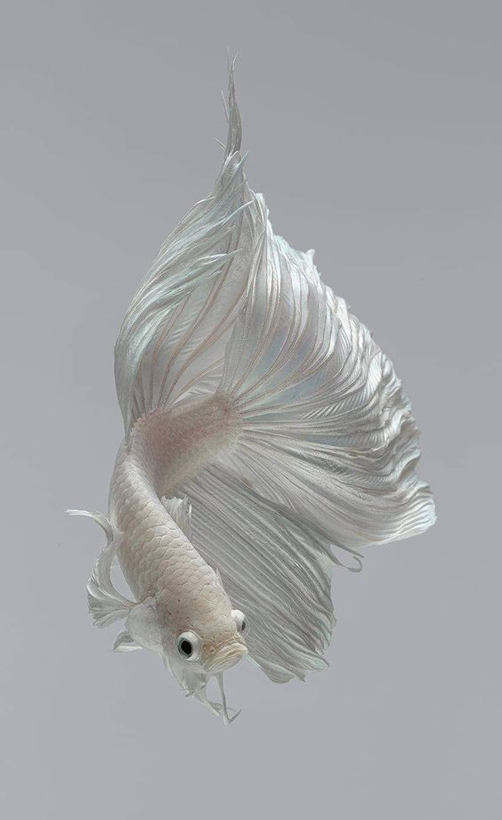
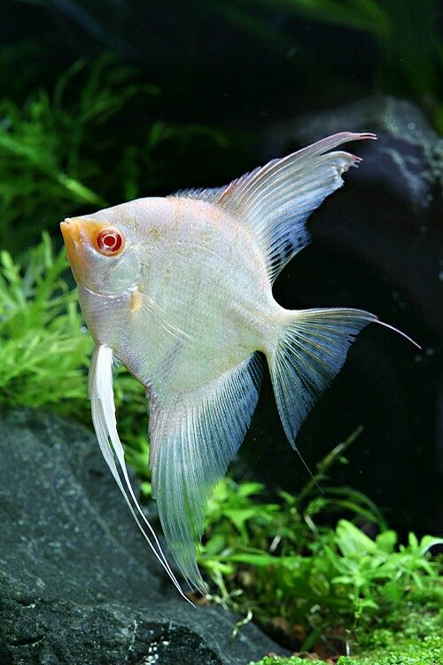
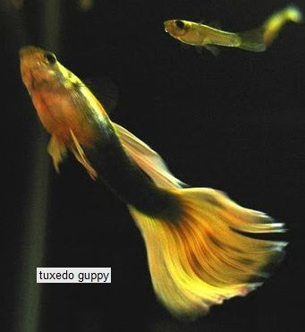
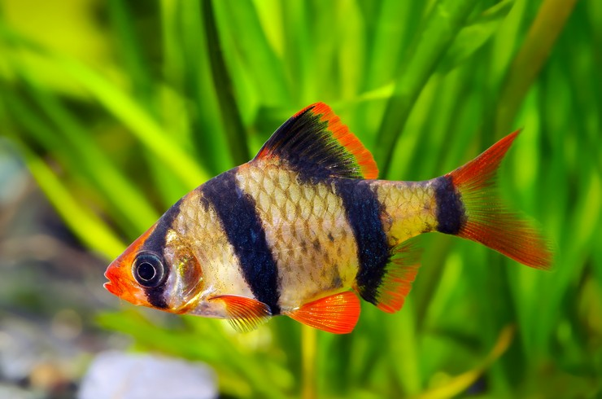
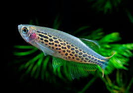
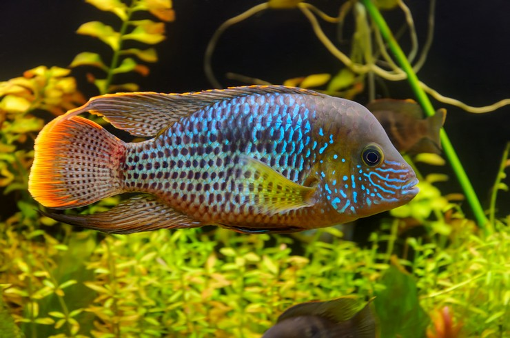
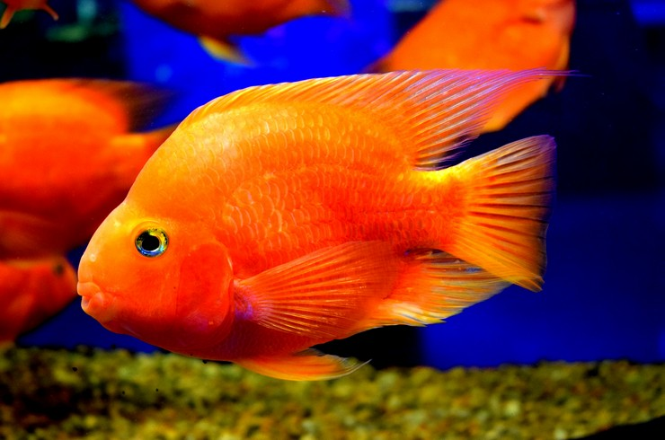
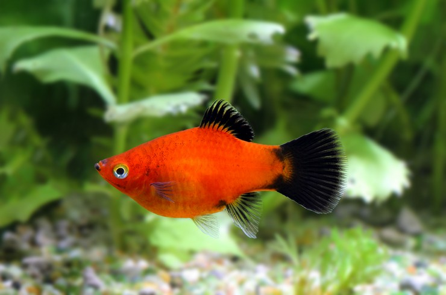
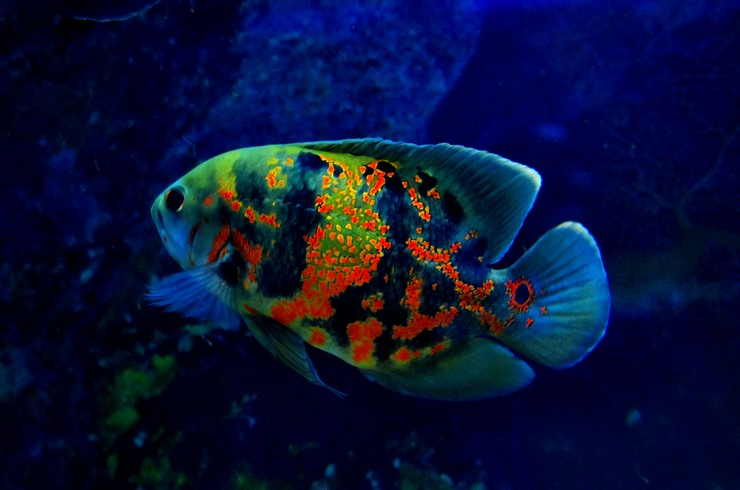
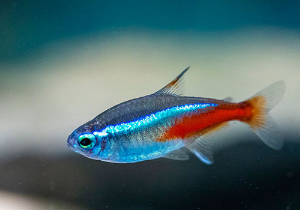

Типи риб
Акваріумні риби поділяються на різні типи в залежності від їх середовища проживання, поведінки, розміру та потреб у догляді. Одним з найбільш популярних типів є тропічні прісноводні риби, такі як неони, гурамі, барбуси, гуппі, моллінезії та пецилії. Вони відомі своєю яскравою зовнішністю, активністю і відносно невибагливістю в догляді. Ще один популярний тип - це цихліди, до яких належать такі види, як дискуси, скалярії, апістограми та африканські цихліди. Ці риби часто потребують специфічних умов утримання і більшої уваги до параметрів води.
Існують також золоті рибки, які є одними з найстаріших видів акваріумних риб, популярних завдяки своїй красі та різноманіттю форм і забарвлень. Для утримання золотих рибок потрібен просторий акваріум та якісна фільтрація води.
Декоративні коропи, або кої, зазвичай утримуються у великих акваріумах або ставках. Вони можуть досягати великих розмірів і відомі своєю витривалістю та тривалим життям.
Для акваріумістів, які люблять спостерігати за природними взаємодіями риб, підходять тетри, такі як неонові тетри, кардинали і конго. Ці невеликі риби живуть зграями і створюють красиві зорові ефекти в акваріумах з густою рослинністю.
Ще один тип - лабіринтові риби, до яких належать бетти, або півники, макроподи та гурамі. Вони мають спеціальний орган, який дозволяє їм дихати атмосферним повітрям, що робить їх особливо витривалими у відносно бідних на кисень водах.
Соми також є популярними мешканцями акваріумів, і до них належать такі види, як коридораси, плекостомуси та анцитруси. Вони зазвичай ведуть донний спосіб життя і допомагають утримувати акваріум в чистоті, поїдаючи залишки їжі та водорості.
Великі хижі риби, такі як арована, оскар та піраньї, потребують просторих акваріумів і специфічних умов утримання. Вони можуть бути справжньою окрасою великих акваріумів, але потребують досвіду та знань від акваріуміста.
Загалом, вибір типу акваріумних риб залежить від вашого досвіду, розміру акваріума та часу, який ви готові приділяти догляду за ними. Кожен тип риб має свої особливості та вимоги, але з належною увагою і доглядом будь-який акваріум може стати джерелом задоволення та краси.
Догляд
Годування акваріумних риб
Годування
Годування акваріумних риб є одним з найважливіших аспектів догляду, оскільки правильний раціон забезпечує рибам здоров'я, гарний вигляд і активність. Годування повинно бути збалансованим і відповідати потребам конкретних видів риб.
Збалансоване харчування: Використовуйте якісний корм, який містить всі необхідні поживні речовини, вітаміни і мінерали. Існують різні види кормів: гранули, пластівці, заморожений та живий корм. Важливо чергувати їх для забезпечення різноманітності в раціоні риб.
Режим годування: Годуйте риб двічі на день, невеликими порціями, які вони можуть з'їсти за 2-3 хвилини. Це допоможе уникнути переїдання та забруднення води залишками їжі. Краще недогодувати рибу, ніж перегодувати, оскільки надлишок їжі може викликати проблеми з травленням та погіршення якості води.
Різноманітність: Чергуйте різні види кормів для забезпечення рибам всіх необхідних поживних речовин. Використовуйте як сухий корм (гранули та пластівці), так і живий або заморожений корм (мотиль, артемія, дафнія). Це допоможе зберегти здоров'я риб і їх яскраве забарвлення.
Рекомендації
Регулярно спостерігайте за поведінкою риб під час годування. Якщо риби не проявляють інтересу до корму або залишають його, це може бути ознакою стресу або хвороби. Звертайте увагу на стан їхнього апетиту.
Не перегодовуйте риб. Надлишок їжі швидко забруднює воду, що може призвести до підвищення рівня аміаку та нітритів, що є небезпечним для риб. Краще годувати риб частіше, але меншими порціями.
Забезпечуйте доступ до живого корму. Живий корм, такий як артемія або мотиль, є природнім джерелом поживних речовин і стимулює природну поведінку риб. Однак, живий корм повинен бути чистим і безпечним, щоб уникнути занесення хвороб в акваріум.
Підтримуйте різноманітність у раціоні риб. Крім основного корму, додавайте в раціон риб рослинний корм, особливо для видів, які мають схильність до поїдання рослин. Це можуть бути спеціальні пластівці або гранули з додаванням рослинних компонентів.
Контролюйте час годування. Годуйте риб в один і той самий час кожного дня. Це допомагає рибам адаптуватися до режиму і зменшує стрес.
Уникайте перерв у годуванні. Риби повинні отримувати їжу регулярно. Якщо ви плануєте поїздку або відсутність на кілька днів, подбайте про те, щоб хтось міг годувати риб або використовуйте автоматичні годівниці.
Годування акваріумних риб – це не тільки турбота про їх здоров'я, але і можливість спостерігати за їхньою поведінкою та звичками. Дотримання правильного раціону і режиму годування забезпечить вашим рибам довге і здорове життя, а ваш акваріум буде радувати своєю красою і гармонією.
Очищення акваріуму
Очищення акваріуму є ключовим аспектом догляду за рибами, який допомагає підтримувати здорове та чисте середовище для їхнього життя. Регулярне очищення акваріуму включає кілька основних етапів, кожен з яких відіграє важливу роль у підтриманні якості води та здоров'я риб.
Заміна води. Щотижнева заміна 10-20% води є необхідною для видалення накопичених відходів і токсинів, таких як аміак, нітрити та нітрати. Використовуйте деклоринатор, щоб видалити хлор та інші шкідливі речовини з водопровідної води перед додаванням її в акваріум. Це допоможе підтримувати стабільні параметри води і запобігати стресу у риб.
Сифонування дна. Використовуйте сифон для видалення органічних відходів, залишків корму та іншого сміття з дна акваріума. Сифонування дна слід проводити одночасно із заміною води. Це допомагає знизити рівень аміаку та інших шкідливих речовин, які можуть накопичуватися в гравії або піску.
Очищення скла. Регулярно очищайте внутрішню поверхню скла від водоростей та інших відкладень за допомогою спеціальних скребків або магнітних очисників. Це не тільки покращує зовнішній вигляд акваріума, але й запобігає надмірному росту водоростей, які можуть негативно впливати на якість води та здоров'я риб.
Обслуговування фільтра. Фільтри є важливими для механічного, хімічного та біологічного очищення води. Регулярно очищайте фільтруючі матеріали, такі як губки, активоване вугілля та біоматеріали, дотримуючись інструкцій виробника. Уникайте повного промивання біоматеріалів, щоб зберегти корисні бактерії, які допомагають у розкладанні шкідливих речовин. Зазвичай фільтри очищуються раз на місяць, але це може варіювати залежно від типу фільтра та завантаженості акваріума.
Очищення декорацій та рослин. Якщо на декораціях або рослинах з'явилися водорості або бруд, їх слід акуратно очистити. Живі рослини можна промити в акваріумній воді, яку ви злили під час заміни води, щоб не пошкодити корисні бактерії. Декорації, такі як камені, корчі або штучні укриття, можна також промити в акваріумній воді.
Контроль параметрів води. Після очищення акваріума важливо перевірити основні параметри води, такі як температура, pH, жорсткість, рівні аміаку, нітритів та нітратів. Використовуйте тест-набори для акваріумної води, щоб переконатися, що всі показники в межах допустимих значень. Це допоможе вчасно виявити будь-які проблеми та запобігти їхньому впливу на здоров'я риб.
Регулярність очищення. Дотримання регулярного графіка очищення акваріума допоможе підтримувати стабільне та здорове середовище для риб. Щотижневі та щомісячні процедури, такі як заміна води, сифонування дна, очищення скла та обслуговування фільтра, забезпечать довгострокове благополуччя вашого акваріума.
Правильне та регулярне очищення акваріума є запорукою здоров'я риб і краси вашого підводного світу. Дотримуючись цих рекомендацій, ви зможете створити комфортні умови для життя ваших акваріумних мешканців та насолоджуватися їхнім яскравим та активним поведінкою.
Параметри води, температура, pH
Параметри води
Правильне підтримання параметрів води в акваріумі є критично важливим для здоров'я і добробуту риб. Основні параметри включають температуру, рівень pH, жорсткість води, а також рівні аміаку, нітритів і нітратів. Дотримання оптимальних параметрів допоможе створити стабільне і безпечне середовище для риб.
Температура
Температура води є одним з найважливіших факторів, що впливають на здоров'я риб. Для більшості тропічних прісноводних риб оптимальна температура води становить від 24°C до 28°C. Деякі види риб можуть вимагати більш специфічних температурних умов, тому важливо враховувати потреби конкретного виду.
Контроль температури: Використовуйте акваріумний нагрівач з терморегулятором для підтримання стабільної температури води. Терморегулятор автоматично вмикає і вимикає нагрівач для підтримки встановленої температури. Для точного вимірювання температури використовуйте акваріумний термометр, розташований в протилежному кінці від нагрівача.
Запобігання різким змінам температури: Різкі коливання температури можуть стресувати риб і спричиняти захворювання. Уникайте розміщення акваріума біля джерел тепла або холоду, таких як вікна, двері або опалювальні прилади.
Підготовка води: Перед додаванням нової води до акваріума під час заміни, переконайтеся, що її температура збігається з температурою води в акваріумі, щоб уникнути стресу у риб.
pH
Рівень pH визначає кислотність або лужність води і є важливим показником, який впливає на фізіологічні процеси риб та інших акваріумних мешканців. Для більшості прісноводних риб оптимальний рівень pH знаходиться в межах від 6.5 до 7.5. Відхилення від цього діапазону можуть викликати стрес і захворювання у риб.
Вимірювання pH: Використовуйте тест-набори або електронні вимірювачі pH для регулярного контролю рівня pH у воді. Рекомендується перевіряти pH щотижня або після заміни води.
Коригування pH: Якщо рівень pH виходить за межі оптимального діапазону, використовуйте спеціальні засоби для підвищення або зниження pH. Наприклад, для підвищення pH можна використовувати харчову соду, а для зниження - спеціальні кислотні буфери або природні методи, такі як додавання торфу.
Cтабільність pH: Раптові зміни pH можуть негативно вплинути на здоров'я риб. Використовуйте буферні розчини, щоб стабілізувати pH і запобігти різким коливанням. Уникайте надмірного використання хімічних засобів для коригування pH, оскільки це може спричинити нестабільність водного середовища.
Дотримання оптимальних параметрів води є запорукою здоров'я і добробуту ваших акваріумних риб. Регулярний контроль та коригування температури і pH допоможуть створити стабільне та безпечне середовище для риб, що сприятиме їхньому активному зростанню та розвитку.
Жорсткість води
Жорсткість води впливає на здоров'я акваріумних риб і визначається концентрацією розчинених мінералів, головним чином кальцію та магнію. Існують два види жорсткості: загальна жорсткість (GH) і карбонатна жорсткість (KH).
Загальна жорсткість (GH)
GH вимірює концентрацію кальцію і магнію. Оптимальний рівень для більшості прісноводних риб становить 3-12 dGH. Низький рівень GH підходить для риб, як-от неони та дискуси, а високий рівень GH – для цихлід і живородних риб.
Карбонатна жорсткість (KH)
KH вимірює рівень карбонатів і бікарбонатів, які стабілізують pH води. Оптимальний рівень для більшості риб – 4-8 dKH. Низький KH може призвести до нестабільного pH, а високий KH забезпечує стабільний pH.
Вимірювання та коригування жорсткості
Вимірювання GH і KH проводиться за допомогою тест-наборів, які доступні в зоомагазинах. Для підвищення жорсткості можна використовувати кораловий пісок, вапнякові камені або спеціальні добавки. Зниження жорсткості досягається змішуванням водопровідної води з дистильованою або використанням торфу у фільтрі.
Регулярно перевіряйте рівні GH і KH, уникайте різких змін, враховуйте потреби риб і готуйте воду перед підміною, щоб підтримувати стабільні умови в акваріумі.
Облаштування акваріуму
Облаштування акваріуму включає вибір і розміщення рослин, декорацій, а також налаштування фільтрації та аерації, щоб створити комфортне середовище для риб.
Рослини
Рослини в акваріумі виконують кілька важливих функцій: вони забезпечують кисень, поглинають нітрати, створюють укриття та естетично покращують вигляд акваріума. Існує багато видів акваріумних рослин, кожен з яких має свої вимоги до освітлення, температури та хімічного складу води.
Вибір рослин залежить від потреб риб і умов у вашому акваріумі. Деякі популярні рослини включають анубіаси, криптокорини, ехінодоруси та роголисники. Важливо забезпечити достатнє освітлення та поживні речовини для росту рослин, використовуючи спеціальні лампи та добрива.
Декорації
Декорації в акваріумі допомагають створити природне середовище та забезпечують рибам укриття. Вибір декорацій залежить від особистих уподобань і потреб риб. Популярні матеріали включають камені, корчі, штучні рослини та різноманітні укриття.
При виборі декорацій важливо враховувати, що вони повинні бути безпечними для риб і не змінювати хімічний склад води. Уникайте гострих предметів, які можуть поранити риб, та матеріалів, що можуть виділяти токсичні речовини.
Фільтрація та аерація
Фільтрація та аерація є ключовими для підтримання чистоти води та забезпечення достатнього рівня кисню в акваріумі.
Фільтрація включає механічну, біологічну та хімічну очистку води. Механічна фільтрація видаляє частинки бруду, біологічна забезпечує розкладання органічних відходів корисними бактеріями, а хімічна видаляє токсини за допомогою активованого вугілля чи інших матеріалів. Вибір фільтра залежить від об'єму акваріума та кількості риб.
Аерація забезпечує насичення води киснем, що важливо для дихання риб і бактерій у фільтрі. Аерацію можна забезпечити за допомогою аераційних каменів, насосів і спеціальних фільтрів з вбудованою функцією аерації. Важливо розташувати аераційні пристрої таким чином, щоб забезпечити рівномірний розподіл кисню по всьому акваріуму.
Дотримання цих рекомендацій допоможе створити здорове та комфортне середовище для ваших акваріумних риб, забезпечуючи їх довголіття та активність.
Основні хвороби риб
1. Іхтіоптоз (Водянка або Вішневий):
Що це: Інфекційне захворювання, спричинене паразитом іхтіоптірусом, яке проявляється в білих виразках або плямах на тілі риби.
Лікування: Використання антипаразитарних ліків, таких як метиленова синь або малахітова зелень. Додатково можна підвищити температуру води і додати сіль.
2. Фінрот:
Що це: Інфекційна хвороба, характеризується пошкодженням плавників риби і може бути спричинена бактеріями або грибками.
Лікування: Використання антибіотиків, наприклад, тетрацикліну або фурагіну. Також важливо підтримувати чистоту води і забезпечити рибам достатнє харчування для підсилення імунітету.
3. Гельмінтози (Черв'яки-паразити):
Що це: Інфекційні захворювання, спричинені паразитичними черв'ями, такими як кільцеперці або кіркони, які можуть вражати органи риб.
Лікування: Використання антипаразитарних препаратів, таких як праціквантел або левамізол. Важливо забезпечити також чисте середовище і оптимальні умови утримання для підтримки імунітету риб.
4. Водянка (Водяна хвороба або Одноклітинна інфекція):
Що це: Це захворювання, спричинене простими одноклітинними організмами з родини Ichthyophthirius multifiliis, яке проявляється у вигляді білих плям або виносів на шкірі риби.
Лікування: Використання антипаразитарних ліків, таких як формалін або метиленова синь. Додатково можна підвищити температуру води та додати сіль.
5. Фурункульоз:
Що це: Це інфекційне захворювання, що викликається бактеріями Aeromonas і Pseudomonas, і проявляється утворенням виразок або гнійних вузлів на тілі риби.
Лікування: Використання антибіотиків, таких як тетрациклін або амоксицилін. Важливо також підтримувати високу якість води та оптимальні умови утримання.
6. Грибкові інфекції:
Що це: Це захворювання, спричинене розвитком грибкових інфекцій, таких як іхтіофтіріоз або змікоз.
Лікування: Використання антимікотичних препаратів, таких як малахітова зелень або флуконазол. Регулярне очищення та дезінфекція акваріума також є важливими частинами лікування.
Це лише кілька прикладів хвороб, з якими можуть стикатися акваріумні риби. Важливо зберігати чистоту води, дотримуватися правильного годування та надавати рибам оптимальні умови утримання для запобігання захворюванням.
Півники
Неймовірно красиві рибки з великими плавниками, які нагадують хвіст півня. Це дуже поширений вид серед акваріумістів всього світу. Півники можуть жити без кисню, завдяки специфічній будові власної дихальної системи. Все, що слід знати про цих риб — це те, що в одному акваріумі не вживеться дві дорослі особи чоловічої статі. Вони неодмінно будуть битися.
Скалярія
Вони мають сплощене тіло, яке дещо нагадує трикутник. Їх ще називають ангелами, адже вони мають біло-сріблястий колір, який красиво переливається у воді. Для скалярій потрібен великий акваріум (від 100 л). В юному віці ці рибки полюбляють зграю, а от в дорослому надають перевагу життю в парі.
Гуппі
Це дійсно одні з найпопулярніших акваріумних рибок. Їх можна побачити у кожному другому акваріумі. Це невеличкі рибки з дуже великим та пишним хвостом. Вони не люблять самоти, тому завжди потрібно заводити одразу ж невеличку зграйку, але в ній має бути лише один самець. Ще один факт, який слід знати про гуппі — це стрибучі риби, тому акваріум повинен мати кришку.
Барбуси
Це дуже метушливі рибки, які можуть виростати до доволі великих розмірів. Вони дуже активні, через що можуть створювати стресові умови для інших мешканців акваріума, які мають спокійніший темперамент. Барбусів легко впізнати завдяки
Даніо
Також дуже активні рибки маленького розміру та з приємним рожевим забарвленням. Вони переважно живуть у верхній частині акваріума та є його справжньою прикрасою. Цих рибок слід заводити лише зграйками (від шести особин). В усьому іншому вони зовсім невибагливі.
Акарі
Це найбарвистіші цихліди, які можуть виростати до 30 сантиметрів завдовжки. Для їх утримання потрібен дуже просторий акваріум (від 300 літрів). Відрізнити цих риб можна за кольоровим забарвленням в якому переважають, блакитні, жовті та зелені плями. Врахуйте, що цихліди хижаки й можуть бути доволі агресивними, особливо у період нересту.
Риби-папуги
Це штучно виведена риба, якої не існує у дикій природі. Це цихліди, яких вивели шляхом схрещення кількох порід. Чимось вони нагадують золоту рибку (як мінімум кольором, хоча вид представлений у різних кольорах), однак мають кумедне бочкоподібне тіло та випукле кругле обличчя. Папуги відкладають ікру, але вони є безплідними, тому потомства ви від них не дочекаєтесь.
Пецилія
Красиві, невеликі, барвисті та спокійні. А ще гарно розмножуються, та швидко приводять потомство. Це ідеальні рибки для акваріумів тож вони й часто в них зустрічаються. А ще це вдалий вибір для акваріумістів початківців. До речі пецилії можуть схрещуватися з мечоносцями.
Астронотус
Окрім космічного вигляду, ці рибки ще й дуже розумні. Вони мають інтелект, і можуть запам’ятовувати обличчя. Саме тому, вони частенько впізнають свого господаря та можуть навіть дати себе погладити. Такі справжні домашні улюбленці. Однак слід врахувати певні нюанси: астронотус виростає до 30 см, тож потребує великого акваріума. А ще ця риба погано вживається з усіма іншими видами.
Неони
Неони зграйні рибки, які не витримують життя на самоті. Вони виглядають неймовірно завдяки специфічному забарвленню, яке світиться в момент коли в акваріумі горить бодай якась підсвітка. Завдяки цьому ціла зграя неонів — це незабутнє видовище за яким можна спостерігати годинами.